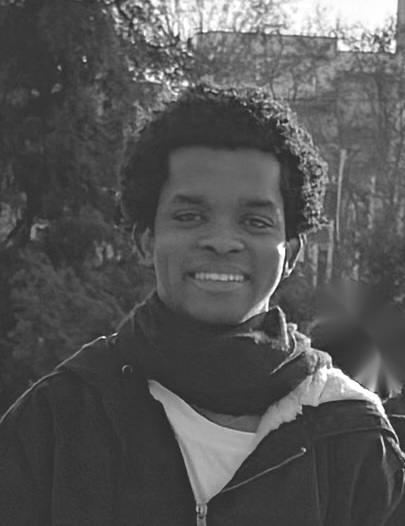

💧
Wasser aus dem Brunnen
Viele Familien holen Wasser direkt aus ihrem eigenen Brunnen. Die Qualität des Wassers muss jedoch geprüft werden.
Ich möchte gemeinsam mit Fachleuten und Partnern einfache, nachhaltige Lösungen entwickeln, um den Zugang zu sicherem Trinkwasser und Solarenergie in Gemeinden in Guinea-Bissau zu verbessern.
In vielen Haushalten in Guinea-Bissau gibt es einen Brunnen. Familien nutzen dieses Wasser für den Alltag. Aber die Wasserqualität ist nicht überall gleich und nicht jede Quelle ist ohne Behandlung sicher zum Trinken.
Viele Familien holen Wasser direkt aus ihrem eigenen Brunnen. Die Qualität des Wassers muss jedoch geprüft werden.
Jeder Standort kann anders sein. Deshalb soll das Wasser zuerst analysiert werden, bevor ein passendes Aufbereitungssystem ausgewählt wird.
Wenn Strom fehlt, wird Licht nach Einbruch der Dunkelheit schwierig. Solarenergie kann hier eine lokale Lösung sein.
Unsicheres Wasser und fehlende Energie können den Alltag, die Gesundheit und die Entwicklung einer Gemeinde erschweren.
Mein Ziel ist nicht, heute schon die endgültige technische Lösung festzulegen. Ich möchte gemeinsam mit Fachleuten die beste Lösung für eine echte Gemeinde entwickeln, testen und verbessern.
💡 Mein aktueller Ansatz: Mit einem kleinen Pilotprojekt beginnen und danach entscheiden, welches Modell nachhaltig erweitert werden kann.
Die genaue Technik wird gemeinsam mit Wasser- und Energie-Fachleuten geplant. Das folgende Modell zeigt die Grundidee.
Ein gutes Projekt beginnt nicht mit dem Kauf von Geräten. Es beginnt mit einer sauberen Untersuchung vor Ort.

Adul BaldeHallo, mein Name ist Adul Balde .
Ich habe mehrere Jahre in Deutschland gelebt, die Sprache gelernt und dort gearbeitet. Jetzt bin ich zurück in meiner Heimat Guinea-Bissau.
Als ich zurückkam, wurde mir wieder bewusst, wie schwierig das Leben für viele Menschen hier sein kann. Besonders der Zugang zu sicherem Wasser und Energie beschäftigt mich.
Ich möchte nicht nur über Probleme sprechen. Ich möchte gemeinsam mit anderen Menschen, Fachleuten und Partnern eine einfache, praktische und nachhaltige Lösung entwickeln.
„Ich möchte Hoffnung und echte Veränderung bringen – Schritt für Schritt, Gemeinde für Gemeinde.“
Damit aus der Idee ein funktionierendes Pilotprojekt wird, brauchen wir unterschiedliche Formen von Unterstützung.
Für Wasseranalyse, Planung, Material, Transport, Installation und Betrieb.
Hilfe bei Solarenergie, Pumpen, Wasseraufbereitung und Dimensionierung.
Fachliche Untersuchung der Quellen und Kontrolle nach der Behandlung.
Geräte, Ersatzteile, Transport und lokale Beschaffung.
Menschen vor Ort sollen lernen, die Anlage zu nutzen und zu warten.
Gemeinsam testen, verbessern und später weitere Gemeinden erreichen.
Der Erfolg soll nicht nur in installierten Geräten gemessen werden, sondern in der tatsächlichen Nutzung und dem Nutzen für Menschen.
Diese Fragen müssen vor dem Start gemeinsam beantwortet werden.
Weil die Wasserqualität von Brunnen zu Brunnen unterschiedlich sein kann. Ein individuelles System kann deshalb mehr Analyse, Technik, Wartung und Kosten benötigen.
Eine zentrale Leitung kann sinnvoll sein, aber sie braucht genaue Planung, Finanzierung, Bauarbeiten und langfristige Wartung. Für den Anfang soll geprüft werden, welche Lösung für eine konkrete Gemeinde realistisch ist.
Solarenergie kann dort interessant sein, wo der Zugang zum öffentlichen Stromnetz begrenzt oder unzuverlässig ist. Die genaue Anlage muss vor Ort dimensioniert werden.
Durch Wasseranalysen vor und nach der Behandlung. Die Qualitätsziele und Prüfungen sollen mit geeigneten Fachleuten festgelegt werden.
Die Gemeinde soll von Anfang an beteiligt werden. Lokale Personen können geschult werden, damit Betrieb, Reinigung und einfache Wartung langfristig möglich sind.
Eine Pilotgemeinde auswählen, Wasser und Bedarf untersuchen, technische Varianten vergleichen und daraus einen realistischen Projektplan mit Kosten erstellen.
Ich suche Menschen und Organisationen, die ihr Wissen, ihre Erfahrung, ihre Technik, ihre Kontakte oder finanzielle Unterstützung einbringen möchten.